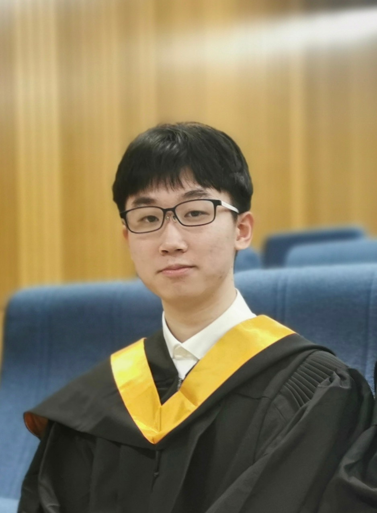

This photo was taken at undergrad commencement ceremony in 2021.
- 1230 E. Speedway Blvd., Tucson, Arizona, USA
- yichengleng@arizona.edu
Hi, I'm Yicheng Leng, third-year CSE PhD student in the Vision, Systems and Intelligence Lab (VSI) from the School of Electrical, Computing, and Software Engineering at the University of Arizona. My current research includes self-supervised learning, graph neural networks, and vision-language models for medical application, under the supervision of Dr. Eungjoo Lee. Apart from my individual research projects, I have collaborated with Children's National Hospital and Imperial College London on a project of self-supervised learning framework for autism detection. Prior to joining the University of Arizona, my research focused on deep learning-based image restoration and inpainting. In particular, I worked with a technology company on a watermark removal project, which led to publications and products. From undergraduate through doctoral studies, I have developed a strong foundation in mathematics, statistics, and programming, and I am committed to advancing work in AI for healthcare and multimodal learning in the future.